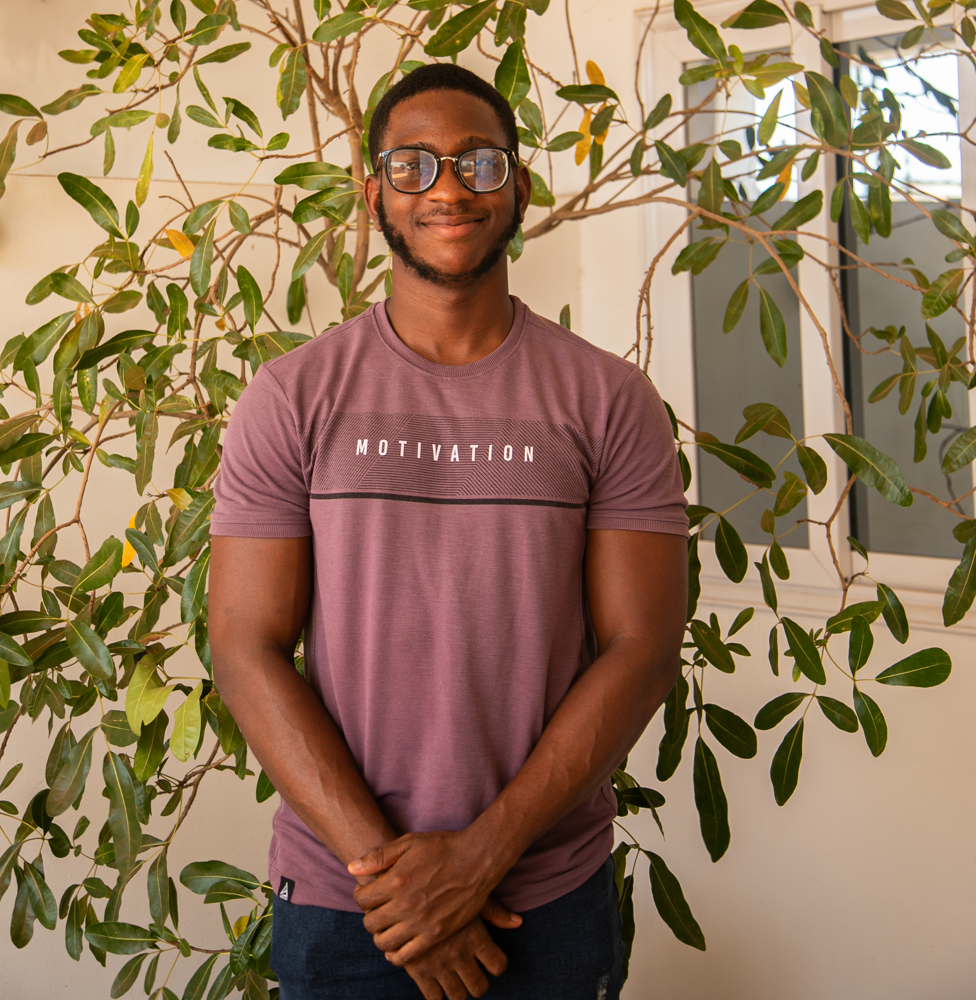

CS grad from Ashesi, now doing an MSc in Data Science & AI at Liverpool. I got into data through an Intro toAI course that showed me what it means to help people make better decisions with information and I've been building towards that ever since.

// 01 — About
I discovered my interest in data through an Intro to AI course at Ashesi University specifically the moment I realised that well-interpreted data doesn't just answer questions, it changes decisions. That's what I've been chasing since.
My capstone project was a machine learning system to support Ashesi's admissions department and it is the work I'm most proud of. Not because of the accuracy scores, but because it was built for a real problem at my own institution, with real data, and real potential to reduce bias in how students get evaluated.
I'm currently studying for an MSc in Data Science & AI at the University of Liverpool, where I also tutor postgraduate students in Python and ML fundamentals. I'm looking for internship or graduate roles in data engineering, data science, or analytics in the UK.
Languages
Analysis & Viz
Data Engineering
Cloud & Infra
Databases
University of Liverpool
MSc Data Science & AI
Liverpool, United Kingdom
Ashesi University
BSc Computer Science
GPA: 3.67 · Accra, Ghana
// 02 — Experience
Academic Tutor
Associate Data Analyst
Data & Technology Intern
Data & Technology Intern
// 03 — Projects
College Admission Prediction System
↗Built for Ashesi University's admissions department. Compared three ML models on 3,284 real applications, achieving 76% accuracy. Also built an OCR system to automate WASSCE grade extraction.
2024 · Ashesi University Capstone
Spotify Emotion-Based Recommender
↗Recommends Spotify playlists based on your facial expression. Detects emotion using DeepFace, classifies into 4 categories via KNN, and serves a 10-track playlist per mood. Tested with 200 users.
2022 · Ashesi University
// 04 — Contact
I'm actively looking for internship and graduate roles in data engineering, data science, and analytics in the UK. If you're building something interesting with data, I'd like to hear about it.
Email is the best way to reach me.
Send an emailselomarcmann@gmail.com
selom-caleb-arcmann-ackummey
GitHub
github.com/selomcaleb
Location
Liverpool, England, UK